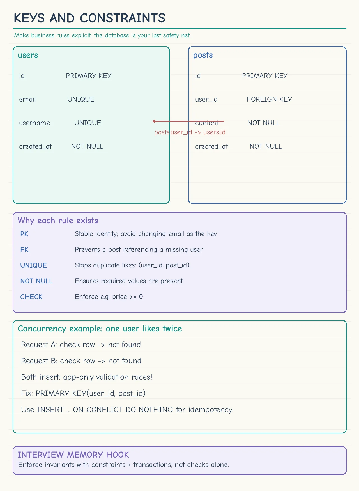
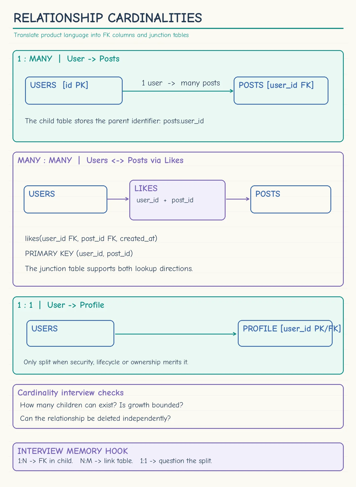
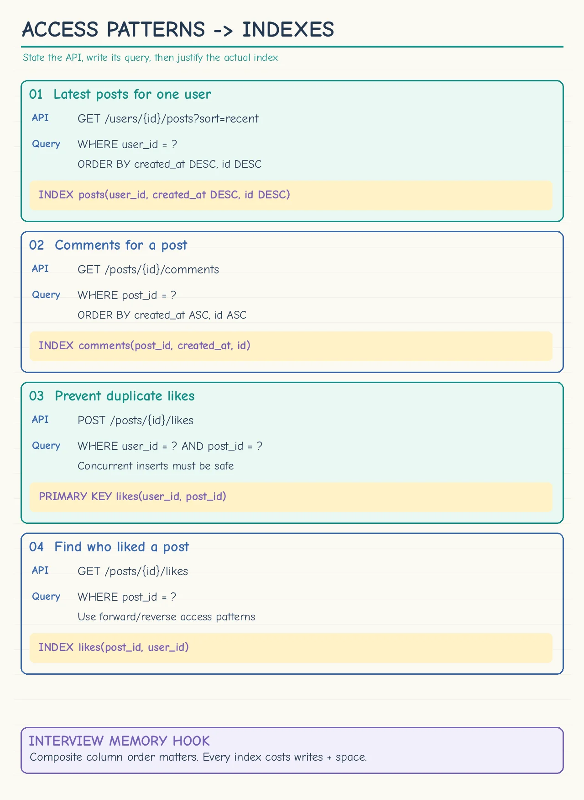
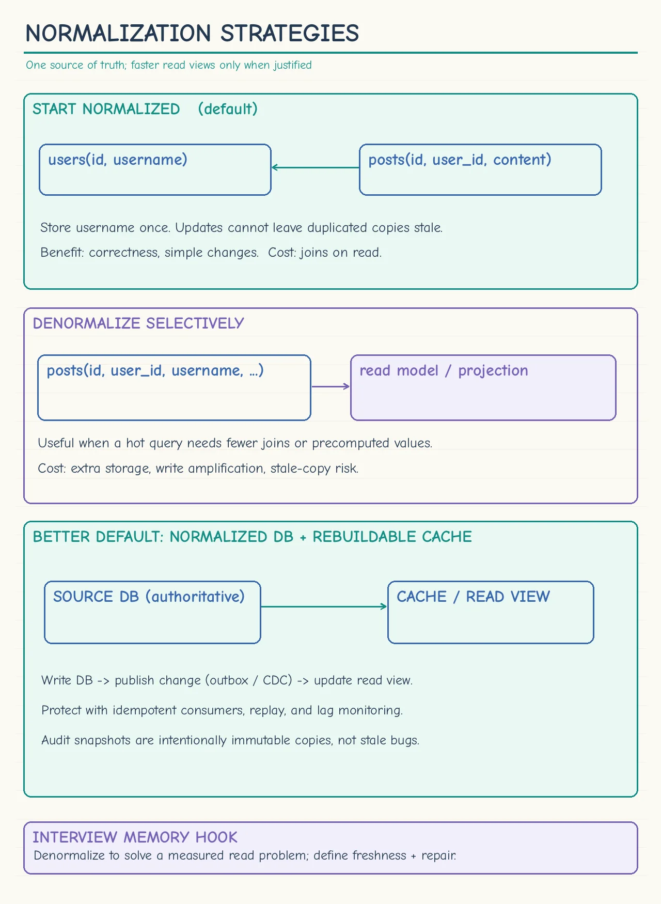

Topic · Data Modeling
Schema Design: Keys, Indexes, Normalization
Stable IDs, invariants as constraints, indexes derived from queries, and a normalized source of truth with selective denormalization.
Cheat sheets
Tap for full size.








Quick Revision
- Stable generated IDs as PKs - never email, phone, or username.
- Business invariants →
UNIQUE,NOT NULL,CHECK, or a transaction; DB constraints are race-safe. - 1:N → FK on the child; N:M → junction table; 1:1 → usually merge.
- Every important index comes from an API; composite order = equality first, then range/sort.
- Normalize first; denormalize only proven hot reads, immutable snapshots, audit/events, search/analytics, rebuildable caches.
Entities, keys, constraints, relationships
- Entities - important domain nouns. Social:
users, posts, comments, likes, follows. Booking:venues, shows, seats, holds, bookings, payments. Commerce:products, inventory, carts, orders, order_items, payments. - Primary keys - stable IDs (
user_id,order_id) keep references stable when business rules change. - Foreign keys - prevent orphans, but add write cost. Across shards/services, enforce in workflows + reconciliation.
- Constraints -
NOT NULLmandatory data,UNIQUEidentity and idempotency,CHECKranges/states. App-only read-then-write checks race. - Cardinality - 1:N
posts.user_id; N:Mlikes(user_id, post_id); 1:1 only for security, ownership, lifecycle, size, or access-frequency reasons.
Access patterns and indexes
- Start from the API - write the approximate query, then choose indexes.
- Index - critical filters, joins, uniqueness checks, range scans, ordering. Not every column.
- One composite beats several singles - e.g.
(user_id, created_at DESC)for a user's recent posts. - Cost - storage + extra work on every insert, update, delete.
- Pagination - cursor on
(created_at, id); avoid largeOFFSET.
Normalization and denormalization
- Normalize first - each mutable fact in one place; fewer anomalies and conflicting copies; joins are fine while fast enough.
- Denormalize selectively - immutable snapshots (
order_items.unit_price_at_purchase), audit/event records, search documents, analytics tables, precomputed feeds/aggregates. - Define ownership - who updates the copy, acceptable staleness, retries, reconciliation, rebuild.
- Cached projection - source DB stays normalized; cache holds a read-ready joined object; disposable and rebuildable.
- Slow joins - try targeted index, cached projection, materialized view, or precomputation before abandoning SQL.
Trade-offs
| Choice | Benefit | Cost / risk |
|---|---|---|
| Normalized source of truth | One authoritative value, simpler updates | More joins or read composition |
| Selective denormalization | Faster reads, fewer joins | Storage, write amplification, stale copies |
| Foreign keys | DB-enforced referential integrity | Validation cost; hard across shards/services |
| Application-enforced integrity | Works across services and stores | Orphans, races, reconciliation, cleanup |
| More indexes | Faster supported reads | More storage, slower writes |
| Composite index | Efficient filter + sort | Only helps when the query matches leading columns |
| Embedded children | One read returns the aggregate | Large documents, contention, unbounded growth |
| Referenced children | Independent growth and pagination | Extra query or join |
Failure modes
- Email/username as PK - generated ID +
UNIQUEbusiness field. - Missing uniqueness invariant -
UNIQUEor composite PK. - Uniqueness checked only in app code - let the DB constraint resolve races.
- Index on every column - index only critical filters, joins, sorts, uniqueness.
- Wrong composite order - equality before range/sort.
- Unbounded embedded array - separate table/collection + pagination.
- Denormalizing all mutable data - keep normalized truth; copy only proven read projections.
Interview practice
Answer aloud, then reveal.
How do you prevent duplicate likes?
PRIMARY KEY(user_id, post_id) or a unique constraint + idempotent insert (ON CONFLICT DO NOTHING).
Why is "check then insert" in app code insufficient?
Concurrent requests can both pass the check; the DB constraint is the race-safe guard.
Load a user's latest posts efficiently?
Index (user_id, created_at DESC, id) + cursor pagination; avoid large OFFSET.
Embed comments in the post document?
Only with a strict small bound; otherwise store separately by post_id.
When and how do you denormalize?
After indexing and caching still leave a critical read too slow. Authoritative write + outbox/CDC, idempotent consumers, lag monitoring, replay/rebuild.
Mutable product names in old orders?
Keep products normalized; copy immutable "at purchase" fields into order_items as a snapshot.
When should foreign keys be removed?
Only when write scale, service ownership, or sharding makes them impractical; replace with validated workflows, idempotency, reconciliation, orphan cleanup.
How do you prevent double booking?
A row per seat per show, unique constraint or atomic state transition, short-lived hold with expiry, confirm in a transaction.
How do you change a schema safely?
Expand-and-contract: add compatible fields, deploy dual-compatible code, backfill, switch reads/writes, remove old fields.